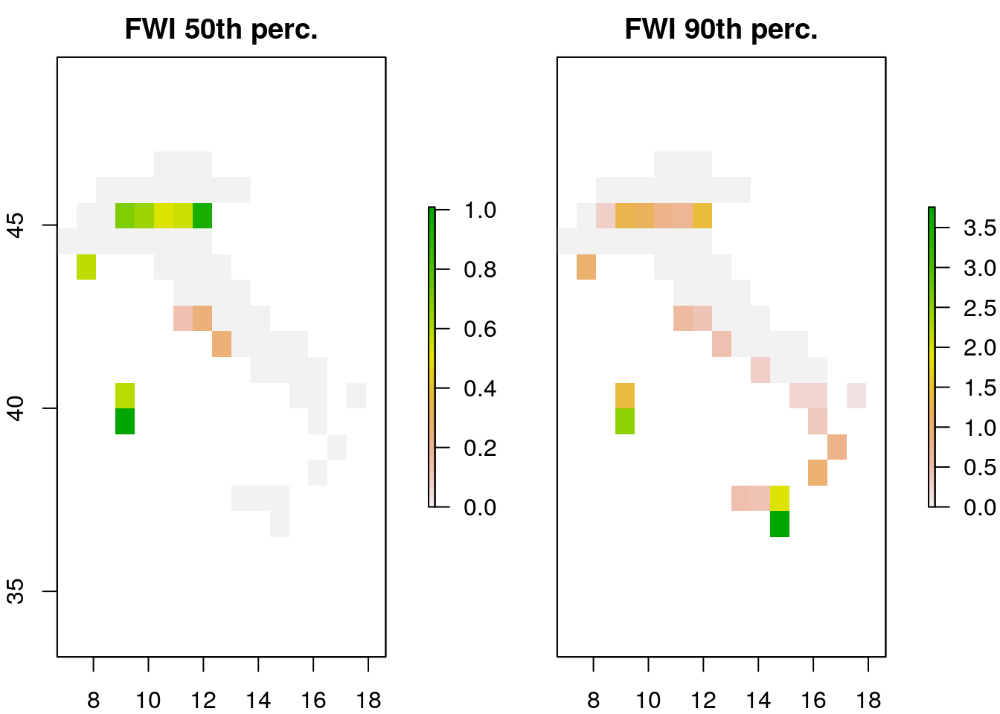
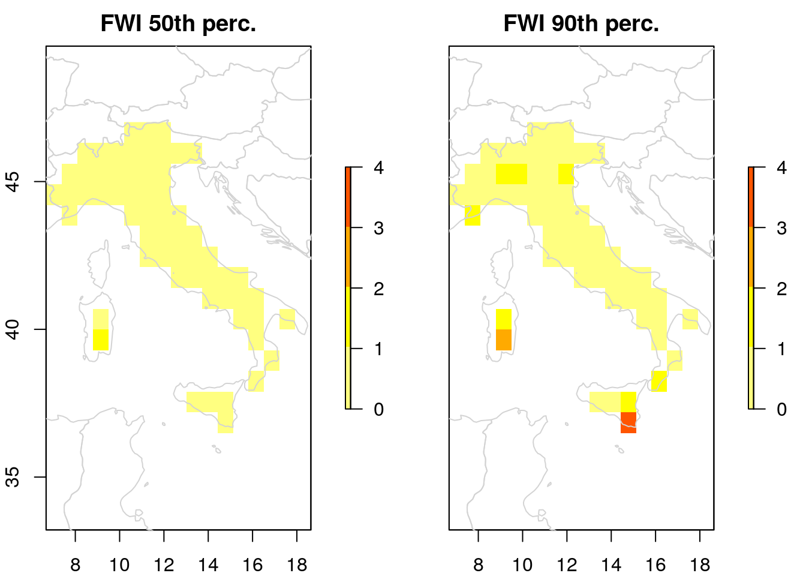

The name caliver stands for CALIbration and VERification of gridded model outputs. It is a package developed for the R programming language and available with an APACHE-2 license from a public repository. The caliver package was initially designed for the post-processing, calibration and validation/verification of Forest Fire models but as development progressed, it became clear that it could have a much wider applicability. The goal of this vignette is to describe the functionalities of the package, examples are given with regard to outputs of the following forest fire models: GEFF and RISICO. Applicability to other model results will be investigated in future works. Complete documentation is available within the package. This vignette contains the code to run all the examples in (Vitolo, Di Giuseppe, and D’Andrea 2018), please refer to this paper for more information.
The caliver package is implemented in the R statistical language and depends on the following external libraries: the Climate Data Operators (Schulzweida, Kornblueh, and Quast 2006) a large tool set for working on climate and NWP model data), the NCAR Command Language (Brown et al. 2012) an interpreted language for scientific data analysis, the Geospatial Data Abstraction Library (Warmerdam 2008) a translator library for raster and vector geospatial data formats, and the NetCDF4 library (Rew and Davis 1990).
The caliver package also depends on additional R packages from both CRAN and Bioconductor. Users must have the above dependencies installed before attempting to install caliver. Installation instructions for different operating systems are available in the README file.
Once all the dependencies are available, the package can be installed via devtools:
# Install caliver from GitHub via devtools
install.packages("devtools")
devtools::install_github("ecmwf/caliver")Load the caliver package:
library("caliver")##
## +------------------------------------------------------------------------------+
## | Copyright 2016 European Centre for Medium-Range Weather Forecasts (ECMWF). |
## | This software is licensed under the terms of the Apache Licence Version 2.0 |
## | which can be obtained at http://www.apache.org/licenses/LICENSE-2.0. |
## | In applying this licence, ECMWF does not waive the privileges and immunities |
## | granted to it by virtue of its status as an intergovernmental organisation |
## | nor does it submit to any jurisdiction. |
## +------------------------------------------------------------------------------+Observed burned areas around the world are collected by the GFED4 in hdf format . This information is very important as it represents the ground truth for fire models, it is needed to make comparisons with reanalysis and forecast models and estimate their reliability.
# Get daily burned area maps from 2003 to 2015 (to be run in the console!)
BurnedAreas <- get_gfed4(start_date = "2003-01-01",
end_date = "2015-12-31",
temporal_resolution = "daily",
varname = "BurnedArea",
region = "GLOB")
# The above can be saved as follows:
raster::writeRaster(BurnedAreas,
filename="BurnedArea.grd",
bandorder='BIL', overwrite=TRUE, progress = 'text')The fourth-generation global fire emissions database also provides as ancillary data a map of 14 basis regions used to evaluate regional annual emission estimates. This map can be retrieved as SpatialPolygonsDataFrame (a spatial class defined in the sp package) setting `varname = “BasisRegions”’.
# Get all the BasisRegions
BasisRegions <- get_gfed4(varname = "BasisRegions")# Europe
Europe <- get_gfed4(varname = "BasisRegions", region = "EURO")Get administrative areas using getdata from the raster package
# United Kingdom
UnitedK <- raster::getData(name = "GADM", country = "United Kingdom",
level = 0)
# Spain
Spain <- raster::getData(name = "GADM", country = "Spain", level = 0)# Italy
Italy <- raster::getData(name = "GADM", country = "Italy", level = 0)# Italian regions
Italy1 <- raster::getData(name = "GADM", country = "Italy", level = 1)
# Get polygons for Liguria, Calabria and Sicily
Liguria <- Italy1[9,]
Calabria <- Italy1[4,]
Sicily <- Italy1[15,]
# Get polygon for the Province of Genoa
Italy2 <- raster::getData(name = "GADM", country = "Italy", level = 2)
Genoa <- Italy2[42,]The function import_GEFF_data_from_tar() can be used to open the tar archive, decompress the gz files, merge the layers into a RasterStack and convert this to a RasterBrick object. A sample dataset (geff5.tar) is available in the testdata folder of the package.
geff5tar <- system.file(file.path("testdata", "geff5.tar"),
package = "caliver")
b <- import_geff_data_from_tar(archive = geff5tar)Decompress bulk gz archives using the function decompress_gz().
decompress_gz(input_dir = "./tmp")Once all the files are decompressed they can be merged in a unique netCDF file using the function stack_netcdf_files().
processingTime <- system.time({
stack_netcdf_files(input_dir = "./tmp", output_file = "FWI.nc")
})A first understanding of how FWI value are distributed over time can be achieved by creating a map of percentiles. In the example below we generate two maps: 1 for the median and the othe for the 90th percentile.
map <- get_percentile_raster(input_file = "FWI.nc", probs = 50)maps <- get_percentile_raster(r = b, probs = c(50, 75, 90))FWI values are related to the local vegetation as well as to localised soil and atmospheric conditions during the dry season. For this reason it is often useful to look at spatio-temporal subsets of the full reanalysis dataset. In the example below, the function mask_crop_subset() is used to extract the 50th and 90th percentiles (setting argument idx = c(1, 3)), masked and cropped over Europe.
mapItaly <- mask_crop_subset(r = maps, p = Italy, idx = c(1, 3))The function plotPercentiles() provides a modified version of the raster::plot() function. Below is a comparison.
# Use the raster plot method
raster::plot(mapItaly, main = c("FWI 50th perc.", "FWI 90th perc."))
# Use the caliver plotPercentiles function
plot_percentile_raster(maps = mapItaly, main = c("FWI 50th perc.", "FWI 90th perc."))
In order to calculate the danger classes, the FWI brick should be loaded and the indices corresponding to the local fire season should be identified. In the example below the fire season is assumed constant across Europe, starting in April and ending in October each year.
dataDates <- seq.Date(from = as.Date("1980-01-01"),
to = as.Date("2016-12-31"),
by = "day")
# Define a function to extract fire seasons in Europe
seasons <- get_fire_season(dates = dataDates, zone = "north")
# Create an index of fire season dates
fireSeasonIndex <- which(seasons == TRUE)Threshold for every area of interest are calculate on the subset of the FWI brick related to the fire season only and cropped over the area of interest. Below are examples calculated for various countries in Europe, regions and a province in Italy. The result shows that fire danger classes is generally correlated to the local climate and spatial variability appears to be meaningful up to regional level.
# Load FWI dataset obtained previously
FWI <- raster::brick("FWI.nc")
# Mask/Crop/Subset FWI over Europe
FWIEURO <- mask_crop_subset(r = FWI, p = Europe, idx = fireSeasonIndex)
# Calculate levels
EuropeThr <- get_fire_danger_levels(fire_index = FWIEURO)
# Country level: use a loop to calculate levels for all the countries in the EU:
# This does not take into account Greenland, Cyprus, Andorra and Luxembrourg.
EUcountries <- c("Austria", "Belgium", "Bulgaria", "Croatia",
"Czech Republic", "Denmark", "Estonia", "Finland", "France",
"Germany", "Greece", "Hungary", "Ireland", "Italy", "Latvia",
"Lithuania", "Luxembourg", "Malta", "Netherlands", "Poland",
"Portugal", "Romania", "Slovakia", "Slovenia", "Spain",
"Sweden", "United Kingdom")
for (singleCountry in EUcountries){
print(singleCountry)
# Mask/Crop/Subset FWI and generate thresholds for singleCountry
singleCountryFWI <- mask_crop_subset(r = FWI,
p = raster::getData(name = "GADM",
country = singleCountry,
level = 0),
idx = fireSeasonIndex)
singleCountryThr <- get_fire_danger_levels(fire_index = singleCountryFWI)
# Append values to data.frame
if (singleCountry == "Austria") {
df <- data.frame(matrix(singleCountryThr, nrow = 1))
}else{
df <- rbind(df, singleCountryThr)
}
print(df)
}
EuroThr <- data.frame(cbind(EUcountries, df, stringsAsFactors=FALSE))
names(EuroThr) <- c("Country", "Low", "Moderate", "High", "VeryHigh", "Extreme")
# Regional level
# Mask/Crop/Subset FWI and generate thresholds for Liguria
LIG <- mask_crop_subset(r = FWI, p = Liguria, idx = fireSeasonIndex)
EuroThr <- rbind(EuroThr, c("Liguria", get_fire_danger_levels(fire_index = LIG)))
# Mask/Crop/Subset FWI and generate thresholds for Calabria
CAL <- mask_crop_subset(r = FWI, p = Calabria, idx = fireSeasonIndex)
EuroThr <- rbind(EuroThr, c("Calabria", get_fire_danger_levels(fire_index = CAL)))
# Mask/Crop/Subset FWI and generate thresholds for Sicily
SIC <- mask_crop_subset(r = FWI, p = Sicily, idx = fireSeasonIndex)
EuroThr <- rbind(EuroThr, c("Sicily", get_fire_danger_levels(fire_index = SIC)))
# Province level
# Mask/Crop/Subset FWI and generate thresholds for Genoa
GEN <- mask_crop_subset(r = FWI, p = Genoa, idx = fireSeasonIndex)
EuroThr <- rbind(EuroThr, c("Genoa", get_fire_danger_levels(fire_index = GEN)))
# Remove NAs, e.g. Luxembourg and Malta are too small compared to the ratser resolution
EuroThr <- EuroThr[complete.cases(EuroThr),]
EuroThr <- rbind(EuroThr, c("Europe", EuropeThr))
# Save table with thresholds for future use
saveRDS(EuroThr, "EuroThr.rds")The thresholds are different from the percentiles, the PDF below shows a comparison for Italy.
countryPDF <- plot_fire_pdf(fire_index = IT,
thresholds = EuroThr["Italy", ],
upper_limit = 75,
v_lines = c(0.50, 0.75, 0.90))Test whether large fires correspond to FWI above high danger
library("pROC")
BurnedAreas <- raster::brick("GFED4_BurnedAreas/BurnedArea.grd")
# Mask and crop burned areas over Europe
BA <- mask_crop_subset(r = BurnedAreas, p = Europe)
# If observations layers have no date, assign it!
dataDates <- seq.Date(from = as.Date("2003-01-01"),
to = as.Date("2015-12-31"), by = "day")
names(BA) <- dataDates
EuroThrHigh <- as.numeric(EuroThr[EuroThr$Country == "Europe", 4])
# The above can be saved and re-loaded as follows:
raster::writeRaster(BA, filename="BurnedAreaEurope.grd",
bandorder='BIL', overwrite=TRUE, progress = 'text')
BurnedAreaEurope <- raster::brick("BurnedAreaEurope.grd")
# For the validation we do not want to subset over the fire season, subset to match days in BurnedAreaEurope
FWIEURO <- mask_crop_subset(r = FWI, p = Europe, idx = which(names(FWI) %in% names(BurnedAreaEurope)))
# The above can be saved and re-loaded as follows:
raster::writeRaster(FWIEURO, filename="FWIEURO.grd", bandorder='BIL', overwrite=TRUE, progress = 'text')
FWIEURO <- raster::brick("FWIEURO.grd")
# Contingency table for JRC - Europe as a whole
x1 <- validate_fire_danger_levels(fire_index = FWIEURO, observation = BurnedAreaEurope,
fire_threshold = 21.3, obs_threshold = 50)
tab_x <- table(pred = x1$pred, obs = x1$obs)
hits <- tab_x[2,2]
misses <- tab_x[1,2]
correct_negatives <- tab_x[1,1]
false_alarms <- tab_x[2,1]
# POD 47%
round(hits/(hits+misses),2)*100
roc1 <- pROC::roc(response = x1$obs, predictor = x1$pred)
pROC::plot.roc(roc1, print.auc = pROC::auc(roc1), print.auc.x = 0, print.auc.y = 0.9)
# Contingency table for caliver - Europe as a whole
x2 <- validate_fire_danger_levels(fire_index = FWIEURO, observation = BurnedAreaEurope,
fire_threshold = EuroThrHigh, obs_threshold = 50)
tab_x <- table(pred = x2$pred, obs = x2$obs)
hits <- tab_x[2,2]
misses <- tab_x[1,2]
# POD 65%
round(hits/(hits+misses),2)*100
roc2 <- pROC::roc(response = x2$obs, predictor = x2$pred)
pROC::plot.roc(roc2, col = "red", add = TRUE,
print.auc = pROC::auc(roc2), print.auc.x = 0, print.auc.y = 0.95,
print.auc.col = "red")
# Loop throught the countries
for (singleCountry in EuroThr[1:26,"Country"]){
print(singleCountry)
if (!(singleCountry %in% c("Cyprus"))){
countryPoly <- raster::getData(name = "GADM", country = singleCountry, level = 0)
countryThr <- as.numeric(EuroThr[EuroThr$Country == singleCountry, 4])
# Crop RasterBricks over country of interest
BA_country <- mask_crop_subset(r = BurnedAreaEurope, p = countryPoly)
FWI_country <- mask_crop_subset(r = FWIEURO, p = countryPoly)
JRC <- validate_fire_danger_levels(fire_index = FWI_country,
observation = BA_country,
fire_threshold = 21.3,
obs_threshold = 50)
tab_JRC <- data.frame(table(JRC$pred, JRC$obs))
caliver1 <- validate_fire_danger_levels(fire_index = FWI_country,
observation = BA_country,
fire_threshold = EuroThrHigh,
obs_threshold = 50)
tab_caliver1 <- data.frame(table(caliver1$pred, caliver1$obs))
caliver2 <- validate_fire_danger_levels(fire_index = FWI_country,
observation = BA_country,
fire_threshold = countryThr,
obs_threshold = 50)
tab_caliver2 <- data.frame(table(caliver2$pred, caliver2$obs))
if (singleCountry == "Austria") {
df_caliver1 <- df_caliver2 <- df_effis <- data.frame("pred" = tab_caliver1$pred, "obs" = tab_caliver1$obs)
i <- 3
}
df_caliver1 <- cbind(df_caliver1, tab_caliver1$Freq)
names(df_caliver1)[i] <- singleCountry
df_caliver2 <- cbind(df_caliver2, tab_caliver2$Freq)
names(df_caliver2)[i] <- singleCountry
df_effis <- cbind(df_effis, tab_JRC$Freq)
names(df_effis)[i] <- singleCountry
i <- i + 1
rm(countryPoly, countryThr, BA_country, FWI_country)
}
}
# Save contingency tables
saveRDS(df_caliver1, "df_caliver1.rds")
saveRDS(df_caliver2, "df_caliver2.rds")
saveRDS(df_effis, "df_effis.rds")
# Europe (EFFIS danger levels)
sum(df_effis[4,3:27]) # hits
sum(df_effis[3,3:27]) # misses
# Europe (averaged danger levels)
sum(df_caliver1[4,3:27]) # hits
sum(df_caliver1[3,3:27]) # misses
# Europe (country-specific danger levels)
sum(df_caliver2[4,3:27]) # hits
sum(df_caliver2[3,3:27]) # misses
# UK (EFFIS danger levels)
df_effis[4, which(names(df_caliver2) == "United Kingdom")] # hits
df_effis[3, which(names(df_caliver2) == "United Kingdom")] # misses
# UK (EU averaged danger levels)
df_caliver1[4, which(names(df_caliver2) == "United Kingdom")] # hits
df_caliver1[3, which(names(df_caliver2) == "United Kingdom")] # misses
# UK (country-specific danger levels)
df_caliver2[4, which(names(df_caliver2) == "United Kingdom")] # hits
df_caliver2[3, which(names(df_caliver2) == "United Kingdom")] # misses
# Spain (EFFIS danger levels)
df_effis[4, which(names(df_caliver2) == "Spain")] # hits
df_effis[3, which(names(df_caliver2) == "Spain")] # misses
# Spain (EU averaged danger levels)
df_caliver1[4, which(names(df_caliver2) == "Spain")] # hits
df_caliver1[3, which(names(df_caliver2) == "Spain")] # misses
# Spain (country-specific danger levels)
df_caliver2[4, which(names(df_caliver2) == "Spain")] # hits
df_caliver2[3, which(names(df_caliver2) == "Spain")] # misses
# Italy (EFFIS danger levels)
df_effis[4, which(names(df_caliver2) == "Italy")] # hits
df_effis[3, which(names(df_caliver2) == "Italy")] # misses
# Italy (EU averaged danger levels)
df_caliver1[4, which(names(df_caliver2) == "Italy")] # hits
df_caliver1[3, which(names(df_caliver2) == "Italy")] # misses
# Italy (country-specific danger levels)
df_caliver2[4, which(names(df_caliver2) == "Italy")] # hits
df_caliver2[3, which(names(df_caliver2) == "Italy")] # missesBrown, D, R Brownrigg, M Haley, and W Huang. 2012. “The Ncar Command Language (Ncl)(version 6.0. 0).” UCAR/NCAR Computational and Information Systems Laboratory, Boulder, CO.[Available Online at Http://Dx. Doi. Org/10.5065/D6WD3XH5.].
Rew, Russ, and Glenn Davis. 1990. “NetCDF: An Interface for Scientific Data Access.” IEEE Computer Graphics and Applications 10 (4). IEEE: 76–82.
Schulzweida, U, L Kornblueh, and R Quast. 2006. “CDO User’s Guide: Climate Data Operators Version 1.6. 1.”
Vitolo, Claudia, Francesca Di Giuseppe, and Mirko D’Andrea. 2018. “Caliver: An R Package for Calibration and Verification of Forest Fire Gridded Model Outputs.” PLOS ONE 13 (1). Public Library of Science: 1–18. doi:10.1371/journal.pone.0189419.
Warmerdam, Frank. 2008. “The Geospatial Data Abstraction Library.” In Open Source Approaches in Spatial Data Handling, 87–104. Springer.